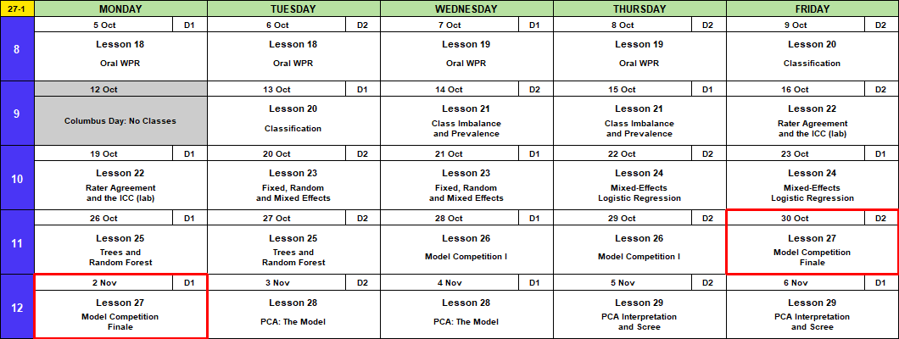
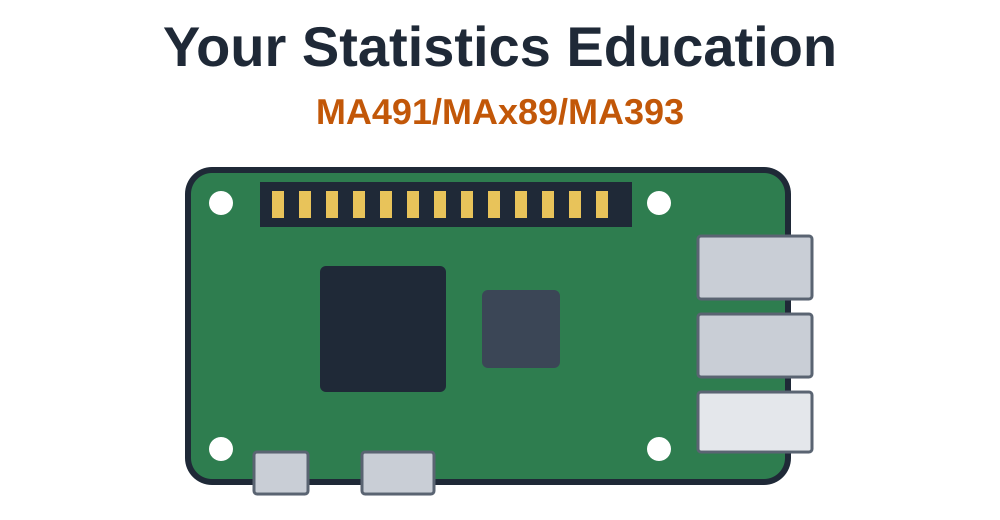

Lesson 27: Model Competition Finale
Calendar

Admin
This Lesson
- Final leaderboard: https://dustydell.tail280d22.ts.net:8443/ma376
Block 3 Quiz: Today
Memo 4
- Due Monday 2 November, every section. Hard copy by 1600, in class or at my office, TH239B.
- Tasking, data description
- Memo 4 is individual. Use your team’s model if you like; the argument is yours.
Coming Up
- Lesson 28, PCA: the model. BC2 Tue 3 Nov; A1, BC1 Wed 4 Nov. Read ISLR 12.1 through 12.2.1 (pages 495 to 501).
- Capstone Milestone 2: methodology and preliminary results. Due 2359 Friday 13 November, 60 points.
- Capstone final presentation. Lessons 37 and 38, 3 to 8 December, 100 points.
- I’m here through Lesson 29, 6 November.
TEE Slots
All TEE periods run 0730 to 1100. Find your name under your section.
NoteMA376 A1 14 (15 cadets)
| P1: Tue 15 Dec (8) | P4: Wed 16 Dec (7) |
|---|---|
| Anteen | Baron |
| Carroll | Fountain |
| Cole | Hardwick |
| Fonte | Rebolledo |
| Konopka | Shioutakon |
| Ploetz | Smith |
| Sun | Youmans |
| Toth |
NoteMA376 BC1 15 (14 cadets)
| P1: Tue 15 Dec (5) | P4: Wed 16 Dec (9) |
|---|---|
| Bode | Best |
| Lee | De La Torre |
| Ndiaye | Laub |
| O’Keefe | Loughman |
| Russell | Miranda |
| Nguyen | |
| Plummer | |
| Ward | |
| Weisenborn |
NoteMA376 BC2 16 (15 cadets)
| P1: Tue 15 Dec (4) | P4: Wed 16 Dec (11) |
|---|---|
| Gray | Applegate |
| Harris | Cannon |
| Van Kley | Ivey |
| Zhai | Johnson |
| Kendig | |
| Marino | |
| Myers | |
| Silverman | |
| Song | |
| Tullier | |
| Wittrock |
What We Did: Lessons 20 to 26
NoteReview: Judging a Classifier (Lesson 20)
| Truth positive | Truth negative | |
|---|---|---|
| Predicted positive | TP | FP, a false alarm |
| Predicted negative | FN, a miss | TN |
- Accuracy \(= \dfrac{TP + TN}{n}\)
- Sensitivity (recall) \(= \dfrac{TP}{TP + FN}\), specificity \(= \dfrac{TN}{TN + FP}\)
- Precision \(= \dfrac{TP}{TP + FP}\)
- \(F_1 = \dfrac{2\,TP}{2\,TP + FP + FN}\)
- Cut probabilities into labels at a threshold. \(0.5\) is a default, not a rule.
NoteReview: Class Imbalance and Prevalence (Lesson 21)
- Rare outcome: the null classifier scores \(1 - \text{prevalence}\), and a \(0.5\) threshold flags almost nothing.
- Three fixes: move the threshold, class weights (
glm(..., weights = w)), undersample. Each one moves the cutoff. None improves the model. - Sensitivity and specificity do not move with prevalence. Precision does.
- Report performance with the prevalence it was measured at.
NoteReview: Rater Agreement and the ICC (Lesson 22)
- Percent agreement \(p_o\). Chance agreement \(p_e = P(A)P(B) + P(A^c)P(B^c)\)
- Cohen’s kappa \(\kappa = \dfrac{p_o - p_e}{1 - p_e}\): agreement once you remove chance. Falls as prevalence moves to an extreme.
- \(\text{PABAK} = 2p_o - 1\): kappa with the prevalence set at half
- ICC \(= \dfrac{\hat\sigma^2_{\text{subject}}}{\hat\sigma^2_{\text{subject}} + \hat\sigma^2_{\text{rater}} + \hat\sigma^2_{\text{error}}}\), from a two-way ANOVA with raters as blocks
- Reliability is not validity: raters can agree and all be wrong.
NoteReview: Fixed, Random and Mixed Effects (Lesson 23)
- \(y_{ij} = \mu + u_j + \varepsilon_{ij}\), \(u_j \sim N(0, \sigma^2_u)\), \(\varepsilon_{ij} \sim N(0, \sigma^2)\)
lmer(y ~ 1 + (1 | group), data = d), thenfixef(),ranef(),coef()- \(\hat y_{ij} = \hat\mu + w_j(\bar y_j - \hat\mu)\), \(w_j = \dfrac{n_j}{n_j + \lambda}\), \(\lambda = \dfrac{\hat\sigma^2}{\hat\sigma^2_u}\): small groups shrink toward the average
- \(\text{ICC} = \dfrac{\hat\sigma^2_u}{\hat\sigma^2_u + \hat\sigma^2}\)
- Fixed: these levels are all you care about. Random: the levels are a sample of many.
NoteReview: Mixed-Effects Logistic Regression (Lesson 24)
- \(\log\dfrac{p_{ij}}{1 - p_{ij}} = \mu + u_j\), \(u_j \sim N(0, \sigma^2_u)\). No \(\varepsilon\): pass or fail is the noise.
glmer(y ~ x + (1 | group), family = binomial, data = d)predict(fit, newdata, type = "response", allow.new.levels = TRUE)glmwith a dummy per group: a group at 100% gets \(\hat\beta \to \infty\).glmershrinks it.- \(\text{ICC} = \dfrac{\hat\sigma^2_u}{\hat\sigma^2_u + \pi^2/3}\)
NoteReview: Trees and Random Forest (Lesson 25)
- A tree splits the data into boxes. Each split picks the predictor and cut that lowers Gini impurity the most.
- Gini for a box: \(G = 2p(1 - p)\). After a split, average the two boxes, weighted by size.
- A tree grown all the way memorizes the training data and does worse on new data. Limit it.
- Random forest: many trees, each on a bootstrap sample, each split choosing from
mtryrandom predictors. The forest votes. randomForest(y ~ ., data = train, ntree = , mtry = , nodesize = ); tune on out-of-bag \(F_1\).predict(fit, newdata, type = "prob")gives the share of trees that vote yes.- Variable importance says which predictors the forest leans on, not how.
NoteReview: Model Competition (Lesson 26)
- Six model types on the Memo 4 leads, scored on \(F_1\) of the
callcolumn. - Logistic at \(0.5\) calls nobody: about 97% accurate, \(F_1 = 0\).
- Tune the cut on
train(five-fold cross-validation) or on the forest’s out-of-bag votes. Never ontest. - Check on
test, then refit on all 12,000 before you predict the incoming leads. - Calls \(= TP + FP\). The recruiters can make 1,230.
What We’re Doing: Lesson 27
The Final Board
Block 3 Quiz
Break!
